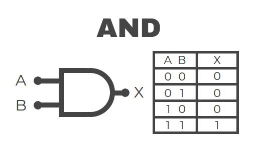
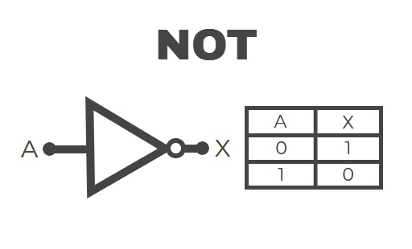

Análisis y Simulación de Compuertas Lógicas Básicas (AND, OR y NOT)
🯠Objetivo General
Analizar el comportamiento de las compuertas lógicas básicas mediante su construcción y simulación.
🯠Objetivos EspecÃficos
- Identificar las diferentes compuertas lógicas y sus sÃmbolos.
- Construir circuitos lógicos básicos utilizando compuertas.
- Verificar las tablas de verdad mediante simulación y práctica.
📚 Marco Teórico
Las compuertas lógicas son la base del diseño digital. A continuación, se presentan las compuertas estudiadas en esta práctica:
Compuerta AND
Solo entrega salida alta (1) cuando todas las entradas son altas.

Compuerta OR
Entrega salida alta si al menos una de las entradas es alta.
Compuerta NOT
Invierte el valor de la entrada: si es 1 pasa a 0 y viceversa.

ğŸ› ï¸ Materiales y Equipo
- Fuente de alimentación
- Protoboard
- Cables de conexión
- LEDs
- Resistencias
- Chips lógicos (74LS08, 74LS32, 74LS04, etc.)
- MultÃmetro (opcional)
📋 Procedimiento
- Conectar la compuerta lógica en el protoboard según el circuito.
- Alimentar adecuadamente el chip.
- Probar las diferentes combinaciones de entradas y observar la salida.
- Registrar resultados.
- (Opcional) Simular los mismos circuitos en software.
📊 Tabla de Resultados
| Entrada A |
Entrada B |
Salida esperada |
Salida real |
Observaciones |
| 0 | 0 | 0 | 0 | Funciona OK |
| 0 | 1 | 1 | 1 | Funciona OK |
| 1 | 0 | 1 | 1 | Funciona OK |
| 1 | 1 | 1 | 1 | Funciona OK |
🔠Análisis y Discusión
- Los resultados reales coincidieron con los esperados.
- No se presentaron errores significativos en las pruebas.
- Si no se conecta correctamente la alimentación del chip, no habrá salida válida.
- Una salida incorrecta puede deberse a un mal contacto, cableado erróneo o daño en el chip.
✅ Conclusiones
- Las compuertas lógicas básicas pueden implementarse fácilmente con componentes TTL.
- El comportamiento real coincide con las tablas de verdad estudiadas.
- La simulación ayuda a verificar el funcionamiento antes de la construcción fÃsica.
📠Anexos